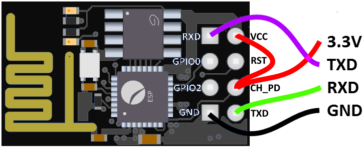
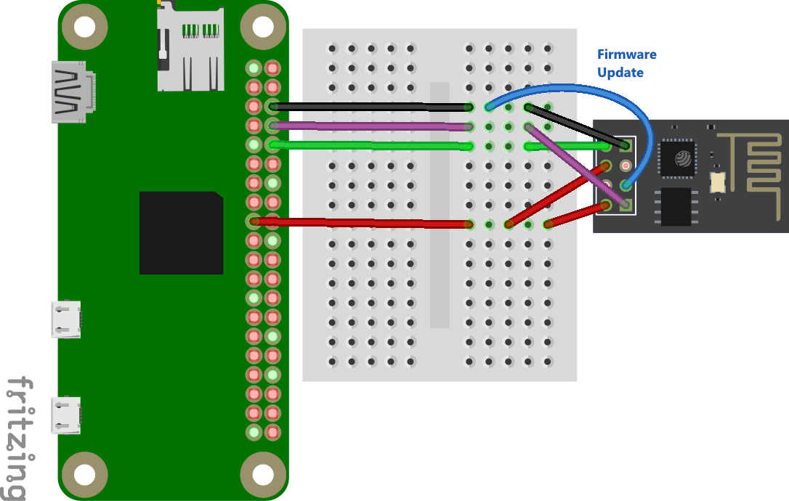

Das kleine Experimentierboard ESP-01(S) mit dem ESP8266 Mikrocontroller kann man recht einfach mit einer neuen Firmware flashen. Man benötigt nur einige Kabelverbindungen und eine 3,3 V serielle Schnittstelle. Eine Aufgabe die man perfekt mit dem Raspberry Pi erledigen kann.
Beschreibung
Der ESP8266 ist ein kostengünstiger 32-Bit-Mikrocontroller der chinesischen Firma Espressif und ermöglicht durch sein integriertes WLAN viele einfache IoT Anwendungen.
Die kleinste und günstigste Platine am Markt trägt die Bezeichnung ESP-01 bzw. die verbesserte Version ESP-01S. Sie wird allerdings oft mit einer veralteten Firmware ausgeliefert. Sie kann aber mit einem Raspberry Pi sehr einfach aktualisert werden. Ein aktuelle Firmware bietet dann auch die Möglichkeit GPIOs über AT-Kommandos zu steuern.
Achtung die alte blaue ESP-01 Platine kann aufgrund des kleinen Speichers (512 KBit) nicht aktualisert werden. Achtung die Version 3 der Firmware setzt zwingend einen 2 MBit Speicher (1024x1024) voraus. Die letzte Firmwareversion für die schwarze ESP-01(S) Platine ist also die Version 2.2.1.

Anschluss
Die ESP-01(S) Platine kann über den UART-Anschluss mit dem Raspberry Pi verbunden werden. Die Versorgung erfolgt über den 3,3 V und den GND Anschluss.

Um später ein Firmware Update ausführen zu können, muss der GPIO0 Eingang auf GND gesetzt werden. Zuerst muss der Pin allerdings offen gelassen werden.
Kommunikation
Um mit dem Raspberry Pi über den UART kommunizieren zu können, muss zunächst der serielle Terminal Dienst beendet werden.
sudo systemctl stop serial-getty@ttyAMA0.service
sudo systemctl status serial-getty@ttyAMA0.service
Verwendet man den GC2-xHAT, so kann die Versorung der Platine sowie die Deaktivierung des Services über den Befehl “esppoweron” erfolgen.
Danach kann das Programm “screen” zur serielles Kommunikations genutzt werden.
sudo apt-get install screen
sudo screen /dev/ttyAMA0 115200
Alle Eingaben müssen mit den Tasten Enter (CR-Zeichen) und Strg+J (LF-Zeichen) abgeschlossen werden.
Als erstes kann man die Verbindung mit dem Befehl “AT” überprüfen (danach Enter und Strg+J nicht vergessen). Als Antwort muss “OK” zurückgeschickt werden.
Der Befehl “AT+GMR” liest die Firmwareversion aus.
AT version:1.3.0.0(Jul 14 2016 18:54:01)
SDK version:2.0.0(5a875ba)
Farylink Technology Co., Ltd. v1.0.0.2
May 11 2017 22:23:58
OK
Sendet man den Reset Befehl “AT+RST”, so wird ein Reset durchgeführt und Informationen über den Mikrocontroller ausgegeben.
ets Jan 8 2013,rst cause:2, boot mode:(3,4)
load 0x40100000, len 2408, room 16
tail 8
chksum 0xe5
load 0x3ffe8000, len 776, room 0
tail 8
chksum 0x84
load 0x3ffe8310, len 632, room 0
tail 8
chksum 0xd8
csum 0xd8
2nd boot version : 1.6
SPI Speed : 40MHz
SPI Mode : QIO
SPI Flash Size & Map: 8Mbit(512KB+512KB)
jump to run user1 @ 1000
ready
Zum Beenden von screen drückt man zuerst Strg+A und gibt dann “:quit” gefolgt von der Enter-Taste ein.
Firmware Update
Zuerst muss man das Python 3 Programm “esptool” installieren und die ESP8266 Firmware herunterladen. Über einen alias Befehl kann man den Aufruf esptool.py auf das Programm verlinken und dann mit dem Parameter “version” testen.
cd ~
wget https://github.com/espressif/ESP8266_NONOS_SDK/archive/v2.2.1.zip
unzip v2.2.1.zip
cd ESP8266_NONOS_SDK-2.2.1/bin/
sudo apt-get install python3 python3-pip
sudo pip3 install esptool -t /usr/local/lib/python3.5/dist-packages
alias esptool.py='python3 /usr/local/lib/python3.5/dist-packages/esptool.py'
alias sudo='sudo '
sudo esptool.py version
esptool.py v2.6
2.6
Die Firmware des ESP01(S) besteht aus mehreren Teilen, die auf verschiedene Adressen geschrieben werden müssen. Eine für den Flash Speicher passende Auflistung, kann der Dokumentation “Kapitel Downloading AT Firmware into the Flash” entnommen werden. Für den ESP01(S) ist die “8 Mbit Flash” Variante die richtige.
| Datei | Adresse |
|---|---|
| bin/blank.bin | 0xFB000 |
| bin/esp_init_data_default_v08.bin | 0xFC000 |
| blank.bin | 0x7E000 |
| blank.bin | 0xFE000 |
| bin/boot_v1.7.bin | 0x00000 |
| bin/at/512+512/user1.1024.new.2.bin | 0x01000 |
Nun muss GPIO0 auf GND gesetzt werden um den Programmiermodus zu setzen. Danach muss der ESP-01 aus- und angesteckt oder ein Reset ausgelöst werden. Ein Reset kann erreicht werden, indem man kurzzeitig den RST-Anschluss auf GND setzt.
Verwendet man den GC2-xHAT, so kann der Programmiermodus mit dem Befehl “espflashingon” aktiviert werden.
Dann ist der Programmiermodus aktiv und folgende Befehle können ausgeführt werden.
sudo esptool.py -p /dev/ttyAMA0 flash_id
esptool.py v2.6
Serial port /dev/ttyAMA0
Connecting....
Detecting chip type... ESP8266
Chip is ESP8266EX
Features: WiFi
MAC: dd:20:f2:26:72:6d
Uploading stub...
Running stub...
Stub running...
Manufacturer: 85
Device: 6014
Detected flash size: 1MB
Hard resetting via RTS pin...
Weil nach dem Befehl eine Reset ausgelöst wurde, bedarf es beim GC2-xHAT einer nochmaligen Aktivierung des Programmiermodus mit dem Befehl “espflashingon”.
sudo esptool.py -p /dev/ttyAMA0 write_flash 0x00000 boot_v1.7.bin 0x01000 at/512+512/user1.1024.new.2.bin 0xFB000 blank.bin 0xFC000 esp_init_data_default_v08.bin 0x7E000 blank.bin 0xFE000 blank.bin
esptool.py v2.6
Serial port /dev/ttyAMA0
Connecting....
Detecting chip type... ESP8266
Chip is ESP8266EX
Features: WiFi
MAC: 60:01:94:18:90:e6
Uploading stub...
Running stub...
Stub running...
Configuring flash size...
Auto-detected Flash size: 1MB
Flash params set to 0x0020
Compressed 4080 bytes to 2936...
Wrote 4080 bytes (2936 compressed) at 0x00000000 in 0.3 seconds (effective 114.7 kbit/s)...
Hash of data verified.
Compressed 408388 bytes to 293527...
Wrote 408388 bytes (293527 compressed) at 0x00001000 in 28.8 seconds (effective 113.4 kbit/s)...
Hash of data verified.
Compressed 4096 bytes to 26...
Wrote 4096 bytes (26 compressed) at 0x000fb000 in 0.0 seconds (effective 3093.4 kbit/s)...
Hash of data verified.
Compressed 128 bytes to 75...
Wrote 128 bytes (75 compressed) at 0x000fc000 in 0.0 seconds (effective 45.5 kbit/s)...
Hash of data verified.
Compressed 4096 bytes to 26...
Wrote 4096 bytes (26 compressed) at 0x0007e000 in 0.0 seconds (effective 3065.0 kbit/s)...
Hash of data verified.
Compressed 4096 bytes to 26...
Wrote 4096 bytes (26 compressed) at 0x000fe000 in 0.0 seconds (effective 3086.9 kbit/s)...
Hash of data verified.
Leaving...
Hard resetting via RTS pin...
Nun muss beim GPIO0 die GND Verbindung entfernt werden. Danach muss der ESP-01(S) aus- und angesteckt oder ein Reset ausgelöst werden. Der Reset kann wieder durch kurzzeitige setzen des RST-Anschlusses auf GND erfolgen.
Verwendet man den GC2-xHAT, so kann der Programmiermodus mit dem Befehl “espflashingoff” deaktiviert werden.
Dann ist der Programmiermodus inaktiv und die folgende AT-Befehle können ausgeführt werden.
sudo screen /dev/ttyAMA0 115200
Der Befehl “AT+GMR” liest die Firmwareversion aus.
AT version:1.6.2.0(Apr 13 2018 11:10:59)
SDK version:2.2.1(6ab97e9)
compile time:Jun 7 2018 19:34:26
Bin version(Wroom 02):1.6.2
OK
Die SDK Version 2.2.1 von Juni 2018 wird nun ausgewiesen.
Sendet man den Reset Befehl “AT+RST”, so wird ein Reset durchgeführt und Informationen über den Mikrocontroller ausgegeben.
ets Jan 8 2013,rst cause:2, boot mode:(3,6)
load 0x40100000, len 2592, room 16
tail 0
chksum 0xf3
load 0x3ffe8000, len 764, room 8
tail 4
chksum 0x92
load 0x3ffe82fc, len 676, room 4
tail 0
chksum 0x22
csum 0x22
2nd boot version : 1.7(5d6f877)
SPI Speed : 40MHz
SPI Mode : QIO
SPI Flash Size & Map: 8Mbit(512KB+512KB)
jump to run user1 @ 1000
ready
Nun ist die “boot version” 1.7 aktiv und die SPI-Übertragung erfolgt im schnelleren QIO Modus.
GPIO-Steuerung
Hat man eine aktuelle Firmware (Version 2.1 oder neuer) auf dem ESP-01S, so kann man die blaue LED am GPIO2 über den neuen AT-Befehlssatz steuern.
Zuerst muss der Pin GPIO2 mit dem Befehl “AT+SYSIOSETCFG” als GPIO parametiert werden.
Der erste Parameter ist die Pin Nummer.
Der zweite Parameter ist der IO-Mode. Um heraus zu finden welchen Wert man vorgeben muss, benötigt man die ESP8266 Pin List. In der Tabelle muss man nachsehen welche Funktion 1-4 die GPIO-Funktion ist. Bei GPIO2 ist Funktion1 die richtige, also muss man als IO-Mode Parameter einen um eins kleineren Wert, also 0 vorgeben. Beispielsweise müsste man bei GPIO12 für GPIO die Funktion 4, also den Wert 3 vorgeben.
Der letzte Parameter ist die Aktivierung des Pull-up Widerstandes.
AT+SYSIOSETCFG=2,0,1
Danach kann man mit dem Befehl “AT+SYSGPIODIR” den Pin als Ein- oder Ausgang definieren. Der erste Parameter ist die Pin Nummer. Beim zweiten Parameter gilt 0 für Eingang und 1 für Ausgang.
AT+SYSGPIODIR=2,1
Dann kann mit dem Befehl “AT+SYSGPIOWRITE” der Ausgang auf Low (0 V) oder High (3,3 V) gesetzt werden. Der erste Parameter ist die Pin Nummer. Beim zweiten Parameter gilt 0 für Low und 1 für High.
AT+SYSGPIOWRITE=2,1
AT+SYSGPIOWRITE=2,0
AT+SYSGPIODIR=2,0
Verlinkungen
Datenblatt Englisch ESP8266EX
Firmware und Tools sind im NONOS SDK auf Github verfügbar.
Der AT-Befehlssatz kann heruntergeladen werden.